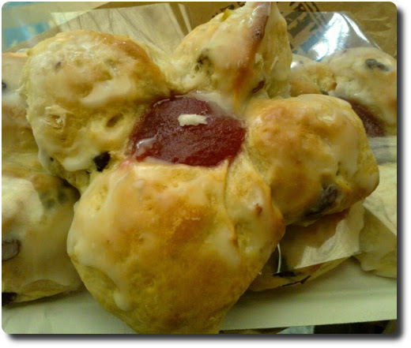

Reformationsbrötchen
Letzte Woche waren wir auf Urlaubsreise in Sachsen unterwegs - meinem Heimatbundesland (Mehr Bilder gibt es davon später). Im Raum Leipzig gibt es zur Zeit wieder Reformationsbrötchen beim Bäcker zu kaufen - im Gedenken an die Reformation der Kirche durch Martin Luther.
Dieses Brötchen ist ein Hefegebäck mit saftigem Teig, der meist Rosinen, Zitronat und Orangeat enthält. In der Mitte muss immer ein Klecks rote Marmelade sein. Sonst ist es kein echtes Reformationsbrötchen. Dieser Klecks soll ja die Lutherrose darstellen (siehe Wikipedia).
Wir hatten unsere Brötchen bei Lukas Bäcker auf dem Leipziger Hauptbahnhof gekauft. Die waren wirklich superlecker, ich hätte gern noch mehr davon gehabt!
